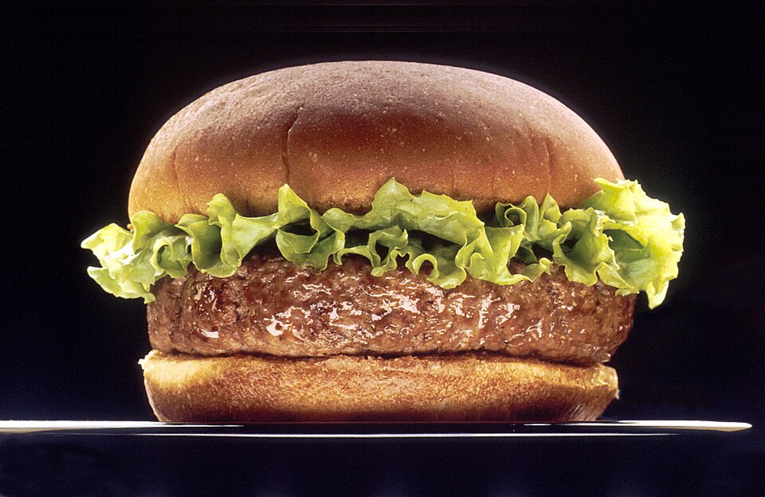

Homemade Hamburgers: A Classic Favorite
By Shyliah Heads

Homemade Hamburgers: A Classic Favorite
Homemade hamburgers are a classic favorite that can be prepared
with simple ingredients and customized with your favorite toppings.
Recipe inspiration:
Ingredients
- Ground beef
- Hamburger buns
- Salt and pepper
- Cheese (optional)
- Lettuce
- Tomato
- Onion
- Your favorite condiments
Rate This Recipe
Conversion
=
Directions
- Prepare the ingredients and toppings.
- Season the ground beef and shape it into patties.
- Cook the patties thoroughly in a pan or on a grill.
- Add cheese if desired and prepare the hamburger buns.
- Assemble the hamburgers with your favorite toppings.
- Serve and enjoy.